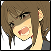

メインフェイズ サイクル2
糸賀大亮：1d6
BloodMoon : (1D6) → 6
夜高ミツル：1d6
BloodMoon : (1D6) → 2
忽亡ゆかり：1d
BloodMoon : (1D6) → 1
ハイドレンジア：2d6
BloodMoon : (2D6) → 6[1,5] → 6
乾咲フラン：1d6
BloodMoon : (1D6) → 5
夜高ミツル：フランさんもえらい
GM：大亮さんのやる気
乾咲フラン：がんばれ♡がんばれ♡
夜高ミツル：俺は背徳をつつかれてしょぼしょぼだよ
GM：大亮→フラン→ハイドレンジア→ミツル→ゆかり→ハイドレンジアね。
GM：ではハンターたちが公園に向かっているとですね。
GM：後ろの方からまあ、派手な破壊音が響きます。
糸賀大亮：交通事故か ハンマーか
ハイドレンジア：振り返れば案の定、真城とハイドレンジアです。屋根の上でやり合ってる。
ハイドレンジア：ハイドレンジアがハンマーを振り回すたびに色んなものが吹き飛ぶ。
ハイドレンジア：電線がブチ切られたり。
ハイドレンジア：看板がすっ飛んだり。
乾咲フラン：住宅街が～
夜高ミツル：街がめちゃくちゃじゃねえか
糸賀大亮：破壊されてるなあ
ハイドレンジア：どさどさと雪が落ちても来るんですが、なぜだか二人の争いには通行人たちも頓着しませんね。
ハイドレンジア：そういうものとして見過ごしている様子。
糸賀大亮：日常に溶け込んでいる……
乾咲フラン：あってたまるか、こんな日常ーっ
夜高ミツル：まあパニックになってないのは良かった 良かったのか いいよな
真城朔：真城もまあ、ほどほどに避けたり。躱したり。ハイドレンジアみたいな破壊はしてませんが。
真城朔：シャツの脇腹こそ血に染まっていますが、特に動きが鈍っている様子もないです。
糸賀大亮：これ、魔女を倒したらもとに戻らないんだよな……
GM：戻りませんね。狩人全員倒したらハイドレンジアが直してくれるんじゃないですか？
乾咲フラン：おお～っとぉ～
ハイドレンジア：「――だっからあ！」
ハイドレンジア：ハイドレンジアが苛立ちを剥き出しに叫ぶ。
ハイドレンジア：「別にさあ、色々あるでしょ！？ 見守るとか、見守るとか見守るとか、……遠くから見守るとか！」
ハイドレンジア：「そういうので満足してなさいよあんたは！」
真城朔：真城はハイドレンジアが振り下ろしたハンマーを避け、側面を足がかりにさらに高く跳び、距離を取る。
真城朔：「いやだから、口出しされる筋合いねえだろ！！」
ハイドレンジア：「あります！ あります、あーりーまーすー！！ 逃げんなー！！」
ハイドレンジア：投げ付けられた杭を、ハイドレンジアは身を逸らして躱すと真城を追い掛ける。
糸賀大亮：破壊は洒落になってないんだが……
乾咲フラン：「言葉だけ聞けば、子供の痴話喧嘩なのだがな……」壊れた屋根を見ながら。
ハイドレンジア：言い争いをしながらも、ハイドレンジアは破壊の痕跡を残しながら、二人の姿はまた遠ざかっていきます。
GM：いきました。
GM：バコーン ズガーン ドサドサ ズシャッ…………みたいな音が遠くなっていく。
GM：遠くからはまた、救急車のサイレンの音。
糸賀大亮：「……雪も積もってきた、急がないとな」
糸賀大亮：急がないとな、と言いつつ、これからするのはときめき相談なのだが……
夜高ミツル：「そうですね、これ以上街を壊させるのは……」
夜高ミツル：「真城だって、いつまで一人で相手してられるか」
夜高ミツル：二人が去っていった方向を心配そうに見やる。
GM：屋根からの落雪に人が巻き込まれた、みたいな話もありますね。
GM：単純に転んで頭打ったみたいな話もあるし。
乾咲フラン：電車は死ぬほど遅延して
GM：もうめちゃめちゃ混乱状態よ。
忽亡ゆかり：「今回は、被害規模が大きいですね」
夜高ミツル：急いでときめきに行こう
糸賀大亮：雪なんか積もったら千葉の電車なんか全休だよなあ
GM：魔女のデタラメさですね。
GM：本人に害意や殺意がなくても容易く大規模な被害を生みがちなのが魔女。
糸賀大亮：吸血鬼がかわいく思えてくる。校舎ひとつだったからな……
乾咲フラン：腕が長くてかわいくない
GM：そんな感じで、じゃあ、いきますか？
GM：ときめき相談室。
糸賀大亮：行こう。ときめきに……
夜高ミツル：いくか～
GM：ときめけ！ 大亮
行動：糸賀大亮
皆川彩花：公園。皆川彩花：サクラがいなくなったので、ぼんやりと降り積もる雪を眺めています。
糸賀大亮：そして、ぞろぞろ戻ってきた俺たちは、サクラを連れていない……
皆川彩花：破壊された雪だるまなんかも見てる。
糸賀大亮：ゆかりさんの破壊の痕。
皆川彩花：戻ってきた大亮に、ぱっと顔を綻ばせて。
皆川彩花：「おかえりなさい！ ……あれ」
皆川彩花：「サクラは？」
糸賀大亮：「……途中で胡桃ちゃんの家を通りがかったら」
糸賀大亮：「帰るって」
糸賀大亮：サクラが。
乾咲フラン：犬と通じ合う大亮
皆川彩花：「そっかあ」
皆川彩花：「ありがとね、大亮さん」
夜高ミツル：ほんとはクラブに引き渡されてめちゃくちゃ嫌がってたけど……
皆川彩花：ｸﾞｸﾞｸﾞｸﾞ……ってなるいぬ
糸賀大亮：「いや……」
糸賀大亮：ちょっと目を泳がせる。瞼の裏に嫌がるサクラの顔が蘇る。
皆川彩花：「？」
糸賀大亮：あとで迎えに行くから……と自分に言い訳をしている。
乾咲フラン：今頃クラブでもみくちゃに可愛がられて餌付けされてるかもしれないから……
皆川彩花：特性餌で。
糸賀大亮：餌付けされたのか……俺以外の狩人に……
皆川彩花：そりゃされるよ……
乾咲フラン：（例のBGM）
糸賀大亮：「……あと、そう、」
皆川彩花：「？」
皆川彩花：彩花が大亮を見上げる、
皆川彩花：その瞳の奥の期待が、
糸賀大亮：「相談を……しに来た」
糸賀大亮：「ので、……頼めるか？」
皆川彩花：続いた言葉に、ぱっと笑顔に。
皆川彩花：「はい！」
皆川彩花：「もちろんです！ どうぞ！」
糸賀大亮：座るか……
皆川彩花：ささ、って椅子を勧めます。座られた。
糸賀大亮：ほかの三人にちらっと目配せしてから、腰を下ろす。
皆川彩花：わくわくと大亮を見ています。
糸賀大亮：「…………」
皆川彩花：どきどき。わくわく。
皆川彩花：「大亮さんは、なんの相談でしょう？」
糸賀大亮：「……なんか変な感じだな。相談……」
糸賀大亮：「ああ、……ええと、」
皆川彩花：「うん」
糸賀大亮：「…………友人関係で」
夜高ミツル：チラ見された。気まずい……
忽亡ゆかり：チラ見されなくても気まずい……
皆川彩花：「友人関係」
皆川彩花：「それは、どういった？」
乾咲フラン：雪だるまをまた作るのな……ここで仁王立ちしてるのもな……という心境
夜高ミツル：2回目だけど、どうしているのが正解なのか分からない……
糸賀大亮：というか、さっきから気になってるんだよな。彩花ちゃんなら何か知ってるかもと思うので、
糸賀大亮：まずはそこから聞こう。
皆川彩花：ちなみに椅子は四人分ありますよ。
忽亡ゆかり：この場所自体が気まずい。破壊した雪だるまの補修を始めていこう
皆川彩花：直してる……
糸賀大亮：「ええと、つまり……自分と仲がいい友達二人が…………」
皆川彩花：彩花はまっすぐに大亮を見ています。
糸賀大亮：「…………めちゃくちゃ仲が悪い、という」
皆川彩花：「…………」
糸賀大亮：真城とは友達じゃないけど……
皆川彩花：「……板挟み、みたいな……？」
糸賀大亮：「そう、そういう感じで…………」
糸賀大亮：「いや、俺は、板挟みというほどではないんだが」
皆川彩花：「ふむふむ」
糸賀大亮：「その二人の仲の悪さには、また別の……友達が関わっており」
皆川彩花：「…………」首をひねった。
糸賀大亮：「……いや、………すまん」
皆川彩花：「大亮さんは、仲良くしてほしいと思っているの？」
皆川彩花：「その友達と、友達に」
糸賀大亮：話が下手すぎることを自覚して、ため息をつく。そもそもたとえ話をするべき話じゃないのでは？
糸賀大亮：「…………ううん」
糸賀大亮：呻く。
皆川彩花：じっと待っています。
糸賀大亮：「俺から見て、なかなか難しそうで……」
皆川彩花：「難しそう……」
乾咲フラン：（ガンバレ、大亮……！）心のうちで応援しています
糸賀大亮：「つまり、着地点としては、仲良くなくてもいいんだ」
糸賀大亮：「せめて、……つまり、理由が分かれば、」
糸賀大亮：「仲が悪い理由が……」
糸賀大亮：「俺としては、振る舞いようがあるんじゃないかと……ええと」
皆川彩花：「その二人も、大亮さんのお友達ですよね？」
糸賀大亮：「……そう」
皆川彩花：「本人に訊いたら、だめ？」
皆川彩花：「なんでそんなに仲悪いのって」
皆川彩花：「友達なら、訊けないですか？」
糸賀大亮：「………要領を得なくてな」
皆川彩花：「？」
皆川彩花：ぱちぱちと瞬き。
糸賀大亮：「聞いたんだが」
皆川彩花：「うん」
夜高ミツル：ハラハラしながら、結局やることもないので雪を丸めている
忽亡ゆかり：これ意外と丸聞こえじゃん。ゆかりは絶望した
皆川彩花：ゆかりさん……
夜高ミツル：かわいそう
乾咲フラン：ゆかりさん（笑）
忽亡ゆかり：笑うな
忽亡ゆかり：糸賀さんが切り込んどんやぞ
糸賀大亮：「だから、彩花ちゃんが……」
糸賀大亮：「………ええと」
皆川彩花：「はぇ」
皆川彩花：自分の名前が出たので、きょとんとしている。
糸賀大亮：「………胡桃ちゃんって、何であんなに真城のこと嫌いなんだ？」
糸賀大亮：結局。
皆川彩花：「えっ」
皆川彩花：「胡桃ちゃんとさっくんのこと？」
糸賀大亮：「そう」
糸賀大亮：「仲が悪いというか……」
糸賀大亮：「胡桃ちゃんが、一方的にというか……」
皆川彩花：「あ、そっか、大亮さんとさっくんも友達なんだもんね」
糸賀大亮：「そう……」友達、まあ、友達……
皆川彩花：彩花は考え込みます。
皆川彩花：「えーと、……うーんと、えー……」
皆川彩花：「……別にさっくんは、胡桃ちゃんのこと、そんな嫌いじゃないと思うんだけど……」
糸賀大亮：「ああ…………」
皆川彩花：「でもさっくんほら、なんか、不良さんって思われてるでしょう」
糸賀大亮：「……そうなのか」
皆川彩花：「学校来ないし、……いや私もあんまりだけど、そういう分かりやすい理由もなくて」
糸賀大亮：そうなのか……（そうなんだ……）
皆川彩花：「怪我もよくしてるから、どっかで喧嘩してるんじゃないかとか、そういう噂もあるし」
皆川彩花：「っていうかタバコ吸うようになっちゃったし」
糸賀大亮：「ああ……」
糸賀大亮：それは……不良だな……
皆川彩花：「病院じゃ吸わないけど、匂いはするもんね」
夜高ミツル：ミツルの家でも吸わないんだよ 気遣いですね
糸賀大亮：タバコは匂いすぐつくからな……
皆川彩花：「で、だから、なんていうか……」
皆川彩花：「胡桃ちゃんはほら、すごいこう、スポーツ系？ っていうか、こう」
皆川彩花：「だから、なんか……受け付けない？ みたいで……」
糸賀大亮：「つまり……相性が」
糸賀大亮：「一方的に」
皆川彩花：「はい」
皆川彩花：頷いた。
皆川彩花：厳粛に。
糸賀大亮：「なるほど……」
糸賀大亮：天を仰いだ。
糸賀大亮：ぺしゃんこになってないといいな、あいつ……
皆川彩花：「私は別にって思うんだけど」
糸賀大亮：「……うん」
皆川彩花：「さっくんはさっくんだし、喧嘩とか学校来ないとかタバコとか、……なんだか」
皆川彩花：「まあ、似合わないなとは思うけど、でも」
皆川彩花：「そんな変わってないのは、分かるから」
皆川彩花：「さっくんは大丈夫だよって、胡桃ちゃんには言うんだけどね」
皆川彩花：「……言えば言うほど……」
糸賀大亮：「うん……」
糸賀大亮：「……まあ……」
皆川彩花：「なのです……」
糸賀大亮：「そういうことは……あるだろうな……」
糸賀大亮：「……真城とは、なんていうか」
皆川彩花：「うん」
糸賀大亮：「…………昔から？」
糸賀大亮：「彩花ちゃんが」
皆川彩花：「うん、小学校の頃から」
糸賀大亮：「……なるほど」
皆川彩花：「よくお見舞いに来てくれたんだよ、さっくん」
皆川彩花：「……中学校あがってからは、あんまりだけど……」
糸賀大亮：「……」目を泳がす。
皆川彩花：「でも、今も来てくれる時は来てくれるから」
皆川彩花：「私は嬉しいのですね」
乾咲フラン：雪像をこねる手が止まっている。
糸賀大亮：母親が吸血鬼化したのと、まあそれは関係があるだろうな。
夜高ミツル：中学上がってからってのは、まぁ、そういうことだろうな……
夜高ミツル：さっきのめぐるのことも思い出してだんだん俯いてくる
糸賀大亮：「うん」
皆川彩花：「あ、そうそう、あの白い花」
皆川彩花：「あの花はさっくんがいつもだよ」
糸賀大亮：「ああ……そうだ。……真城からも聞いたよ」
糸賀大亮：「花はふつう持っていくものだろうと言われて……」
皆川彩花：「なるほどー」
糸賀大亮：「……もっともだと」
皆川彩花：「でも、なくても嬉しいよ」
糸賀大亮：「…………ああ」
糸賀大亮：「……」
皆川彩花：「用意するのが面倒で来れないより、手ぶらで来てくれた方がいいよ」
糸賀大亮：「ああ、面倒ってことはないが……」
糸賀大亮：「いつでも行くよ」
皆川彩花：「わーい」
糸賀大亮：「……ありがとう、少しスッキリした」
皆川彩花：ころころと笑う。
皆川彩花：「ん」
糸賀大亮：「それと……」
皆川彩花：ちょっと顔がそれだけ？ って顔になってるぞ。
糸賀大亮：「悪いが、もうひとついいかな」
皆川彩花：なったので、続きを待って、
皆川彩花：「はい！」
皆川彩花：「大歓迎ですとも！」
乾咲フラン：恐ろしい聞きたがりだよ
夜高ミツル：それだけ？って顔
皆川彩花：でもゆかりさんがあんだけ吐いたんやぞ
夜高ミツル：まあね……
糸賀大亮：大亮自分の話してないからな
皆川彩花：「大亮さん、友達の悩みが多いんですねえ」
糸賀大亮：「……そうだな」
糸賀大亮：「不思議だ……」
皆川彩花：「お友達がいないより良いのかな……？」
糸賀大亮：「友達、少ないと思ってたんだけどな……」
糸賀大亮：「……たぶん」
皆川彩花：「私はどうですか？」
乾咲フラン：彩花ちゃん抜身の刀か？
夜高ミツル：無邪気で鋭い
糸賀大亮：「……仲良くしてくれて、ありがたい」
皆川彩花：「……えへへ」
皆川彩花：「……私こそ、ありがとうございます」
皆川彩花：ふにゃふにゃ笑う。
糸賀大亮：「なんだか……頼もしいし」
皆川彩花：「へ」
糸賀大亮：「……今日は特に」
皆川彩花：ぱちっと瞬き。
皆川彩花：「たのも」
皆川彩花：「しい？」
皆川彩花：ぽかーんと。
糸賀大亮：「そう」
皆川彩花：「胡桃ちゃんじゃなくて？」
糸賀大亮：「胡桃ちゃんも、まあ……頼もしいが」言ってて胸が痛む。
糸賀大亮：「彩花ちゃんも、こう、」
糸賀大亮：「……いろいろ、言ってくれるというか……」
皆川彩花：「え、……ええと」
糸賀大亮：「俺が、言わせてしまっているというのもあるが……」
皆川彩花：どこかおろおろとし始めた。視線が彷徨う。
糸賀大亮：「……ええと」
皆川彩花：「そ、そう？ かな？ ……ですか？」
糸賀大亮：「そう思う」
皆川彩花：「私、そんなのは全然」
皆川彩花：「だって、ほら、ずっと誰かに頼ってばかりで」
皆川彩花：「心配かけてばかりで、私自身はなんにもできないのに」
皆川彩花：「みんな、来てくれないと、ずっと一人だし、……」
皆川彩花：「…………」
糸賀大亮：「……俺は、」
糸賀大亮：「……彩花ちゃんといると安心するし、助けてもらってるよ」
糸賀大亮：「病院にだって、彩花ちゃんが体調を崩して、心配だってのもあるけど」
皆川彩花：呆然と大亮を見ている。
糸賀大亮：「俺が会いに行きたいから、行ってるわけだし」
糸賀大亮：「…………」
皆川彩花：「…………」
糸賀大亮：「…………ええと」
皆川彩花：「……は、はい」
糸賀大亮：「そうだ、悩みの……」
皆川彩花：「はっ」
皆川彩花：「はい！ なんでしょう！」
皆川彩花：ぴし、と背筋を伸ばす。
糸賀大亮：「……ああ、そうだ」
糸賀大亮：「ある友達が、とてもいい奴で……」
皆川彩花：いつもより多めに頷いております。
糸賀大亮：「……すごく優しくしてくれて、友達想いなんだ」
皆川彩花：「……はい」
糸賀大亮：「そういう子が……でも」
糸賀大亮：「他では、とんでもないことをしていて」
皆川彩花：「…………」
糸賀大亮：「…………誰かを傷つけていて」
皆川彩花：少し、表情を曇らせる。
糸賀大亮：「………でも俺は、その子がとてもいい子なのを知っている」
糸賀大亮：「そういう時、」
糸賀大亮：「………俺は、その子に、何か」
糸賀大亮：「できることが、あるだろうかと……」
皆川彩花：「……うーん……」
糸賀大亮：「…………」
皆川彩花：「その友達は、いい子で」
糸賀大亮：「…………ああ」
皆川彩花：「いい子なのに、誰かを傷つけてしまっている、というのなら」
皆川彩花：「それは……なにか、理由とかは、分かるんですか？」
糸賀大亮：「…………ああ」
糸賀大亮：目が泳ぐ。
皆川彩花：「そう……」
皆川彩花：「そう、でも、……理由があっても、でも」
皆川彩花：「……ダメ、だよね。そんなのは」
糸賀大亮：「…………ああ」
糸賀大亮：「………だから、」
糸賀大亮：「そう、……すまない」
糸賀大亮：「やることは、決まっているんだ……本当は」
皆川彩花：「……私は」
皆川彩花：「私、なら、……」
皆川彩花：大亮を見る。
糸賀大亮：「…………でも」
糸賀大亮：「決まっていても、それ以上に、」
皆川彩花：「…………」
皆川彩花：大亮の言葉を待つ。
糸賀大亮：「それ以外に、なにか、……」
糸賀大亮：「かける言葉であるとか、……」
皆川彩花：「……そんなこと」
皆川彩花：「しなくてもいいんだよ、って」
皆川彩花：「言ってあげられたら、いいのにね」
糸賀大亮：「…………」
糸賀大亮：「…………そうだな」
皆川彩花：「それで、何かが解決するかは、分からないけど」
皆川彩花：「大変なことも、辛いことも、そんなのは、私」
皆川彩花：「ないほうがいいって、ずっと思ってて、だから」
皆川彩花：「…………」
皆川彩花：「そうはいかないことの方が、多いのかも知れないけど……」
糸賀大亮：「うん……」
糸賀大亮：「…………」
皆川彩花：「……大丈夫だよ、って、口先だけじゃなく、言ってあげられたら」
皆川彩花：「そんなこと、しなくて済むのかな」
皆川彩花：「わかんないな……」
糸賀大亮：「…………ああ」
皆川彩花：視線を落としてしまっている。
皆川彩花：今は傍らに、サクラの姿もない。
糸賀大亮：「…………」俯いて、少し考えこむ。
皆川彩花：雪がしんしんと降り続けるばかり。
糸賀大亮：目を伏せると、紫陽花の花畑が思い浮かぶ。
糸賀大亮：苦しんでいた彩花の幻。
糸賀大亮：ここにいる、元気そうな彼女。
糸賀大亮：「………ありがとう」
皆川彩花：「？」
皆川彩花：顔を上げて、大亮を見た。
糸賀大亮：「これは……本当に、」
糸賀大亮：「どうしようもないことなのかもしれなくて」
皆川彩花：「うん」
糸賀大亮：「…………どんなことをやろうとしても」
糸賀大亮：「言い訳にしかならないかもしれないというような」
糸賀大亮：「そういうことだから」
皆川彩花：「……うん」
糸賀大亮：「聞いてくれるだけで……」
皆川彩花：「うん……」
皆川彩花：繰り返し、頷く。
皆川彩花：大亮さん尊厳破壊回避してるな……って思ったけど
皆川彩花：この人二回背徳壊されてるんだもんな……
乾咲フラン：かわいそう
乾咲フラン：（マジで）
夜高ミツル：一話で結構……かなり……
忽亡ゆかり：元の尊厳が低いからギリギリ許した
夜高ミツル：ゆかり……
皆川彩花：「でもね、大亮さん」
皆川彩花：「もし……もし、できることなら」
糸賀大亮：「……」
皆川彩花：「その友達のことは、…………」
糸賀大亮：顔を上げる。
皆川彩花：「…………」
皆川彩花：「……私が、こんなこと、言っていいのか」
皆川彩花：「……私、…………」
皆川彩花：胸に手を当てる。
皆川彩花：顔に落ちる影は、どこか苦しそうに。
糸賀大亮：「……」 一瞬、ハッとした顔になって。
皆川彩花：「……ううん」
皆川彩花：首を振った。
皆川彩花：「やっぱり、……無責任、かな」
皆川彩花：「……ごめんね」
糸賀大亮：「……いや」
皆川彩花：「変なこと、言っちゃった」
糸賀大亮：「いいや」
糸賀大亮：「…………真剣に聞いてくれているってことだと思う」
皆川彩花：「…………」
皆川彩花：「……相談所、ですから」
糸賀大亮：「うん」
皆川彩花：「ちゃんと答えられなくて、ごめんね」
糸賀大亮：「いいや……」
糸賀大亮：「ありがとう」
GM：そろそろ判定か……？
GM：これやってると判定忘れるな
糸賀大亮：判定しよう……
GM：人脈をどうぞ。えっ逃げるからなのかこいつ？
糸賀大亮：逃げるからなんですよ。
乾咲フラン：フフッ
乾咲フラン：人脈から逃げるな
夜高ミツル：とりあえずフランさんに援護して激情ゲットしてもらう？
GM：素だと7ですね。攻撃力で+1なので。
乾咲フラン：そうですね 援護します
糸賀大亮：興奮剤を使って5、フランさんに援護してもらって4
糸賀大亮：4以上……
GM：そ、それは出せよ……！
乾咲フラン：出せよ！
乾咲フラン：怖がりすぎでしょ
糸賀大亮：4以上出していこう。
糸賀大亮：行きます。
糸賀大亮：2D6+4>=8 （判定：逃げる）
BloodMoon : (2D6+4>=8) → 5[2,3]+4 → 9 → 成功
夜高ミツル：逃げた！
乾咲フラン：逃げた
糸賀大亮：逃げた。
忽亡ゆかり：！
GM：逃げたね……
糸賀大亮：逃げるな。
GM：支配力：皆川彩花 ３→２
GM：乾咲フランのテンションが3増加！（テンション：9->12）
GM：乾咲フランは激情を獲得！（激情：0->1）
糸賀大亮：興奮剤が2個になった。
GM：多いが
夜高ミツル：興奮剤、PT内でまだ5個もある
糸賀大亮：大きく息をついて、立ち上がった。
皆川彩花：「……もう、大丈夫？」
皆川彩花：大亮を見上げる。
糸賀大亮：「ああ。……彩花ちゃんが話してくれて助かった」
皆川彩花：「……ん、うん」
皆川彩花：こくこくと頷いて。
糸賀大亮：「もう少し、自分でもまた考えてみるよ」
糸賀大亮：「……お世話になりました」
糸賀大亮：頭を下げる。
皆川彩花：「…………」
皆川彩花：「あんまり、がんばりすぎないでね」
皆川彩花：「大亮さんも」
糸賀大亮：「ああ。彩花ちゃんも」
皆川彩花：「ん」
糸賀大亮：「話をたくさん聞いてると、けっこう疲れるだろうから……」
皆川彩花：頷くと、またあの花のハンマーを手に取ります。
皆川彩花：ぱきん、とくるみの実を割る。
夜高ミツル：あな花が複数回回ってたら彩花ちゃんのハンマーを奪い取る蛮族ハンターもいたんだろうか
GM：彩花が割らないと減らないシステムですね。
夜高ミツル：セキュリティ意識
糸賀大亮：ちゃんとしている。
GM：彩花がちゃんと満足して本人が割らないと減らないです。
忽亡ゆかり：認証システムが入っている
皆川彩花：「でも、楽しいよ」
皆川彩花：「いっぱい、いろんなお話を聞けるのは」
糸賀大亮：「……ああ」
皆川彩花：「話してもらえるのは、すごく楽しいから、いいの」
皆川彩花：ぱっと笑った。
糸賀大亮：「………よかった」そうしてまた。
糸賀大亮：ハイドレンジアの姿を、思い浮かべた。
ハイドレンジア：華やかですらある、魔女の笑顔。
糸賀大亮：……助けようと。
糸賀大亮：救おうとした。
糸賀大亮：きっと、そうなんだろう。でも……
糸賀大亮：やっぱり、吸血鬼と同じで、助けるだけでは、救うだけではいられないのだ。
糸賀大亮：嘆息して、彩花ちゃんに手を振ってから、三人の方に戻っていこう。
糸賀大亮：交代だ……
皆川彩花：手を振り返して、大亮の背中を見送った。
GM：さーてフランさん準備はいいかァ！？
夜高ミツル：フランさんの尊厳はどうなるかな？
GM：生半可な尊厳破壊ではゆかりさんが満足しないぞ（満足させる先が間違っている）
忽亡ゆかり：そうだぞ
行動：乾咲フラン
皆川彩花：どうぞ。乾咲フラン：はい……
皆川彩花：待ってます。うきうきで。
乾咲フラン：ぽんぽんと手の雪を払って、大亮を横目で見ながら休憩所にやってきます。
忽亡ゆかり：悩みってああいうのでよかったんだ……って感じの表情を両手で覆っています
皆川彩花：ほええ……みたいな顔でフランを見てます。
皆川彩花：フランさんの輝き、すごい。
乾咲フラン：「やあ、お久しぶり。あの日以来だね。」にこやかに挨拶しながら美が着席します。
乾咲フラン：「といっても……あの時は眠っていたか。」
皆川彩花：「あっ、は、はい！ ……はい？」
皆川彩花：眠っていましたね。よく覚えていない様子。
皆川彩花：首を傾げた。
乾咲フラン：「まあ、糸賀クンのお友達という事は知っているという事で……乾咲フランだよ、よろしくね。」
皆川彩花：「ふらんさん！」
皆川彩花：「かっこいい名前ですね」
皆川彩花：「私は、皆川彩花です。よろしくお願いします」
皆川彩花：頭を下げる。
乾咲フラン：「フフ、よろしくね皆川彩花ちゃん。可憐な名前だ。」
乾咲フラン：会釈を返す。
皆川彩花：「そ、そうですか？」
皆川彩花：少し頬を赤らめて。
乾咲フラン：その様子をニコニコ見ています。
忽亡ゆかり：こんなかっこよく登場していいんですか？
糸賀大亮：ゆかりさん……
忽亡ゆかり：このあとかっこいいままで居られるんですか……？居る気ですか……？？？？
皆川彩花：ゆかりさんがヤクザになってる
皆川彩花：モンスター側か？
夜高ミツル：尊厳ヤクザ
糸賀大亮：尊厳を地にまみれさすことに執着する亡者
皆川彩花：「フランさん……フランさん、みたいな人も」
皆川彩花：「やっぱり悩むことはあるんですか？」結構失礼な質問だよこれ。
乾咲フラン：「悩み……悩みというか。」
乾咲フラン：「ずっと、忘れられない人がいて……」
皆川彩花：「！」
皆川彩花：「そ、それは」
皆川彩花：「どういう意味の……」
皆川彩花：思わず声をひそめる。
乾咲フラン：ニコ……と笑って。「そうだね……好きだったんだよ……」
皆川彩花：「ほあ……」
皆川彩花：美しい男からのロマンスめいた告白にあわわとなっている。
皆川彩花：「そ、その人は、どういう……？」
皆川彩花：「あ、どういうっていうのは、えっと、ええっと」
皆川彩花：どういう意味で訊いたのか自分でもわからなくなっている。
皆川彩花：美の圧がすごい。
夜高ミツル：あの人にもそういうのあるんだな……と不躾なことを思っている
乾咲フラン：「ふふ、結局ね、友達で終わってしまったんだ……」
皆川彩花：「終わって……」
乾咲フラン：「何も言い出せなくて……」
皆川彩花：「あう……」
皆川彩花：どうにも圧に負けて呆けた声が出ているが。
皆川彩花：「終わってしまった、……と、いうのは、…………」
乾咲フラン：「私や、私の家はさ、美しい物を集めたりするのが趣味というか……まあとにかく美に対しては一家言あるトコなんだ。」
皆川彩花：こくこくと頷く。
皆川彩花：「美……」
忽亡ゆかり：すごい説明だな
忽亡ゆかり：どういう家だってなるけど そういう家なんだもんな……
皆川彩花：そういう家でしかないからな……
糸賀大亮：美に纏わる美の家
忽亡ゆかり：いやどういう家だよ
夜高ミツル：そういう家なんだよな
皆川彩花：「……！」
乾咲フラン：「ほら、アイドルをプロデュースする！みたいな。そういうスカウトマンみたいな気分だったんだよね、最初は。」
皆川彩花：息を呑みながらフランの話を聞いている。
皆川彩花：「ぷろでゅーす」
乾咲フラン：「私は人に化粧をするのが得意でね、その子最初は野暮ったく、でも"素質"を感じてさ 少し整えてあげたら……それはもう見違えるように綺麗になって！」
皆川彩花：「ほああ……」
皆川彩花：きらきらした瞳で聞いている。
乾咲フラン：「自分で美を育て上げるのは良い気分だった……」ふふっと笑って。
皆川彩花：「その、それで、ええと」
皆川彩花：「そうして、プロデュースをして、磨き上げて」
皆川彩花：「一緒にいるうちに、……」
皆川彩花：「と、いうような……？」
乾咲フラン：「そう……だね。」少しだけ陰る笑顔。「ちょっと美しくしすぎてしまったみたいで。」
皆川彩花：「うつくしくしすぎて」
乾咲フラン：「彼女を見つける王子様がやってきてしまったのさ。」
皆川彩花：「あ……」
皆川彩花：眉を寄せる。
乾咲フラン：とても王子と呼べるような人間ではなかった、あの男——名前を思い出す。
乾咲フラン：「シンデレラにドレスをやった魔女はお役御免というわけさ。私は……彼女がきっとそれで幸せになると思って。」
忽亡ゆかり：ちょっと一般人にも伝わる程度の感覚まで寄せて説明してくれた
糸賀大亮：フランさん、話運びが上手い 美しい
皆川彩花：さすが美
皆川彩花：魔法使いにおさまってしまったのか……
糸賀大亮：表現が美しい
皆川彩花：「…………」
皆川彩花：「その王子様は、よい人だったんですか？」
皆川彩花：「フランさんが託してもいいと、そう思えるような……？」
GM：フランが思い出す彼の姿は、様子は、
GM：野暮ったさはあったが、真摯な男ではあった、という風には思われた。
GM：あの夜。全てが破綻した、あの夜までは。
乾咲フラン：「…………結果は、よくなかったよ。」やわらかな、笑顔。「でもその時は、きっと……彼女も幸せになれると思っていたんだ。私も、彼も、あのひとも……」
皆川彩花：「…………」
皆川彩花：「……その、彼女、さんは」
皆川彩花：「今は、…………」
皆川彩花：聞いていいのだろうかと、ためらう。
乾咲フラン：「息子を一人残して、死んでしまったんだ。」やわらかな声。
皆川彩花：「…………」
皆川彩花：悲しげに眉を寄せる。
乾咲フラン：思い出に浸っていたフランの脳裏に忍び寄る、先程の朔の姿——
乾咲フラン：「私はまあ、まだ、その人の事が好きで……忘れられないんだろうね……」机に肘をついて顎をのせる。
真城朔：歳を重ねるごとに、
真城碧：彼女に似ていく、その姿。
乾咲フラン：「忘れられなくて……」
皆川彩花：「……はい」
乾咲フラン：「その子に出会ったのが、高校生の頃で………………息子が今、高校生なんだ……………」
皆川彩花：「…………はい」
皆川彩花：つまり……というような、視線。
乾咲フラン：「…………」
皆川彩花：じっ。
乾咲フラン：「ちょっと待ってくれ……」世界に対してちょっと待ってほしいと思った。
皆川彩花：「は、はいっ」
皆川彩花：「待ちます」
皆川彩花：「いくらでも！」
皆川彩花：いくらでも待つので吐けということでは？
夜高ミツル：んん……？ という感じになってきている。
忽亡ゆかり：それってもしかして、と。
糸賀大亮：破壊の後ゆかりさんの手によって再生を見た雪玉に腰かけています。
皆川彩花：匠の技
糸賀大亮：これさすがに真城の母親のことだって分かるもんな……
糸賀大亮：お茶会のおかげで話が呑み込めてしまう
夜高ミツル：そろそろ察してきちゃうね
糸賀大亮：雲行きが怪しくなってきたな……
皆川彩花：「むすこなので……」
乾咲フラン：「母親に似てて……ここまではいいですね？」世界に対して大丈夫ですね？と問うています。
皆川彩花：「は、はい」
皆川彩花：「似てるんですね」
皆川彩花：「息子さんが、フランさんの好きだった人に、似ていて」
皆川彩花：「高校生なんですね」
皆川彩花：口頭で繰り返した。
乾咲フラン：「息子が、母親に、似ています……それは高校生になり、より一層、そう思います……」ヘタクソな和訳になりました。
皆川彩花：「思いますか……」
皆川彩花：「…………」
乾咲フラン：フランは自分の思考を掘りますが、掘っても掘っても出てくるものは恐ろしい結論ばかりです。
夜高ミツル：あんまり……こう……符合とかに気づかなかったことにしていきたい……
糸賀大亮：腕をもごうとしていたフランのことを思い出して、深く考えたくなくなっています。
忽亡ゆかり：さっきの背徳に立ち会ったので「もうこれアレだろ」と考えています
皆川彩花：「……あのー」
皆川彩花：「……好きになってしまった、とかですか？」
乾咲フラン：「あっまだです！」張りのある声が出た。
皆川彩花：「まだでしたか！」
皆川彩花：「まだ？」
皆川彩花：首を傾げた。
乾咲フラン：法螺貝があったなら、今すぐに吹いて何もかもを有耶無耶にしたい気持ちになっています。
皆川彩花：しかしここには雪しかない。
皆川彩花：雪とか、椅子とか、あと花形のハンマーとか。くるみとか。チラシとか。
乾咲フラン：ああいっそ花形のハンマーで自分の頭が割れたなら。しかし自分は狩人なので、魔女を倒す前に倒れるわけにはいきません。
夜高ミツル：多分そういう偶然もあるし……俺が知ってる人間関係にたまたま当てはめてしまっているだけで……
乾咲フラン：「そう、大丈夫……大丈夫です。」そうかな？
皆川彩花：「だいじょうぶ」
皆川彩花：「……大丈夫なんですか？」
乾咲フラン：「はい……その……ちょっと気になることが、あるだけだから……」
皆川彩花：「…………」
皆川彩花：「気になること、というのは……？」
乾咲フラン：「訳あって、その息子は色々なアクションが伴う活動をしていて……私もソレに随伴することがあってね……」少し調子を取り戻しましたね
皆川彩花：「あくしょん」
夜高ミツル：このペースならゆかりさんも満足してくれるんじゃないですか？
糸賀大亮：笑顔になっちゃうよ。
忽亡ゆかり：これは
忽亡ゆかり：満点ですね
糸賀大亮：満点いただいてる。
皆川彩花：よかったねぇゆかりさん！
忽亡ゆかり：うん、よかったぁ！
皆川彩花：全然よくなさそうなミツルくん
夜高ミツル：俺は全てに気づかなかったことにしたいよ
皆川彩花：もう無理だよ
糸賀大亮：ダメだなこれは…
忽亡ゆかり：どんどんみんなの予想を補強する情報が入ってくる
皆川彩花：ミツルくんが自分をごまかせない情報が出たよ
皆川彩花：たのしーーーーーーー！！！
糸賀大亮：天才GM
皆川彩花：「かっこいいですね……！」
乾咲フラン：順調に会話という車を走らせていますが、この先の道路は……
皆川彩花：フランの脳裏を過ぎるのはハンドルを切り違えたハイエース。
夜高ミツル：気のせい……偶然の一致……自分を騙している。
乾咲フラン：「その時、その息子の、体が……」
乾咲フラン：「妙に、柔らかく……」
皆川彩花：「やわらかく」
糸賀大亮：えっ？ という顔をした。
皆川彩花：「……やわらかく……？」
乾咲フラン：「もしかして、息子は……息子じゃ、ないのかと……」
皆川彩花：「…………うん？」
皆川彩花：うん？
夜高ミツル：はァ？ と口に出してしまいそうになった。こらえた。
乾咲フラン：ブーン、キキー グシャー
皆川彩花：あの時、よく見たら路面がアイスバーンを起こしていましたね。
皆川彩花：それでハイエースがね。事故をね。
糸賀大亮：轢かれてましたね～
皆川彩花：「…………むすめさんになっちゃったんですか？」
乾咲フラン：「私はいろいろな美を取り扱う都合上、人間の骨格や肉質には詳しいんだ。」
皆川彩花：「はい、はいはい」
乾咲フラン：「………………触った時に、あれ、ちがうかも って……」
皆川彩花：「ちがう」
皆川彩花：「…………」
皆川彩花：「ちがう……」
皆川彩花：ぷしゅー。
糸賀大亮：夜高を見る。
夜高ミツル：俺を見られても困る！
忽亡ゆかり：んんん？？？
糸賀大亮：いや、でも、だって……
夜高ミツル：ていうか普通に男ですよ！？とか、色んな気持ちを込めて首を振った。
糸賀大亮：だよなあ……
忽亡ゆかり：え、それってあの場面か？つまりその、それはつまり、え、だって元は男だったよな？
乾咲フラン：「そうすると……私はもう……どうすればいいのかって……」皆そう思っていますよ。
乾咲フラン：おかしいな 美しい思い出からどうしてこうなった うんとこしょ どっこいしょ それでも尊厳は戻りません
皆川彩花：「……こう」
皆川彩花：「なにかの跡継ぎみたいなあれで、あの」
皆川彩花：「性別を……偽って、育てられた、というような……」
皆川彩花：フランは幼い頃の真城が普通に男だったのは知っていますね。
皆川彩花：というか、まあ……生まれた頃から知ってるので。そりゃ……そりゃあね。
乾咲フラン：唸る。確かにある意味何かの跡継ぎではあるんだが。「うん、うん……そうなのかも、そうなのかも。」男だとわかっています。
皆川彩花：「……えーと」
乾咲フラン：「でもね……」
皆川彩花：「……は、はい」
乾咲フラン：「その子の事は、赤子の頃から見ていて……」
糸賀大亮：瞼の裏にハイドレンジアの姿が思い浮かぶ……
皆川彩花：「…………」
乾咲フラン：「何もかも計算が合わなくなっていくね……」
皆川彩花：「そうですね……」
皆川彩花：本当にそう。
皆川彩花：「……と、とにかく、ええと」
皆川彩花：「その……それ、そのことじたいはですね、はい」
皆川彩花：「あの、わかんないんですけど、何も」
皆川彩花：「でも、だから……それで、それに対して、フランさんが？」
乾咲フラン：「私はどうすればいいのだろうね…………」力ない笑い。どうすればいいんだ？
皆川彩花：「フランさんは……」
皆川彩花：「…………」
皆川彩花：「……本当にその人が娘さんだったら、やっぱり、好きになっちゃうってことですか？」
乾咲フラン：「私は……」悪のフランがハーイと答えを手に持って掲げています。見なかった事にします。
皆川彩花：とにかく心持ちの方の問題に絞った。
乾咲フラン：「そ……」苦悶。言葉がクラッシュします。
皆川彩花：「…………」ごくりとつばを飲み込む。
乾咲フラン：「でも、息子であって……あの人ではないから？ウッ、でも17年見てきた……」<F1>ぐらいの声で。
皆川彩花：「は、はい」
乾咲フラン：「た、たとえ娘になっても、すぐに好きになるということは……何かこう……道徳、美が……無いような気がしていてね……」
乾咲フラン：こんな事を言っているから碧を取られちゃうんだぞ と悪のフランが囁きます。
皆川彩花：「確かに……」
皆川彩花：「性別でいきなり見方が変わっちゃう、っていうのは、なんというか」
皆川彩花：「ちょっと寂しい、ですもんね」
夜高ミツル：そもそもあの人何歳なんだろう……という原初の疑問に現実逃避している
糸賀大亮：俺は何を聞かされているんだろう……とゆかりの時と同じ疑問を抱いている。
乾咲フラン：「良くないけど、やっぱり今までの積み重ねもあるし、好きになる可能性は否定できないよね。」悪に屈しました。
皆川彩花：屈している。
糸賀大亮：屈した。
皆川彩花：「…………」
皆川彩花：「息子さんだと思っていた頃は、どうだったんですか？」
皆川彩花：「息子さんだと思っていた頃も、気になってはいたんですか？」
乾咲フラン：「そ↑っこは……」声が跳ねます。思い返される床の腕。
乾咲フラン：「美しいとは思っていたよ……でも、それだけだよね？」聞くな。
皆川彩花：「そ、それだけなんですか？」訊き返した。
乾咲フラン：「美しい！」強めの声。それだけだ！自分の中の悪霊よ……去れ！
皆川彩花：「うつくしい」
糸賀大亮：ついにPLじゃなくてフランさんが悪霊と戦い始めた
夜高ミツル：もうずっと笑ってる
糸賀大亮：面白すぎる
皆川彩花：ゆかりさん大満足でしょこんなん
糸賀大亮：フランさん！フランさん……フランさん！！？
糸賀大亮：美しい男が崩壊している
乾咲フラン：暴走特急だよこんなん
皆川彩花：「……昔から気になっていたなら、そんなにダメでもないような気がしてきましたが……」
乾咲フラン：「そ、そうかな……？」ダメだよ
皆川彩花：「あ、でも高校生なんですもんね、その人」
乾咲フラン：「そっそうだな。」
皆川彩花：「年の差は……」
皆川彩花：「待てば大丈夫、じゃないでしょうか……？」
皆川彩花：「あの、ちゃんと合意の上ですけど、それはもちろんで」
乾咲フラン：「なるほど……そうだな！」そうじゃないよ。
皆川彩花：「ちゃんと大人になるのを待って、それでね、それでもまだ好きだったらね」
皆川彩花：「それでお互いの思いが通じ合うのならですね」
皆川彩花：「誰に責められるでもないんじゃないでしょうか！」
乾咲フラン：「美しい話だよね……」（まずは合意の上で……確認しないとな）
皆川彩花：「あ、でも」
皆川彩花：「その、お母さんを重ねて、っていうのは」
皆川彩花：「あんまり良くない……と、思うので、ほら」
皆川彩花：「その人、息子さん？ 娘さん？ 本人を、見られていないですし」
乾咲フラン：「そうだよね……重ねられる方も、辛いもんね……」
皆川彩花：「はい」
皆川彩花：頷いた。
乾咲フラン：ガールズトークの雰囲気が出てきました。
皆川彩花：「だから、そこをきちんと見極めてですね、それも含めて気長にですよ」
皆川彩花：「ちゃんとその人が好きなら、娘さんも息子さんもきっと関係ないと思うんです！」
乾咲フラン：「そうだね……見守るのは得意だから。頑張るよ！」話は交通事故を起こし、野山を駆けていきます。
皆川彩花：ぐっと両手袋でガッツポーズ。
皆川彩花：「はい！ がんばってください！」
乾咲フラン：にっこり笑顔でガッツポーズを返す。
GM：では……判定しましょうか……
乾咲フラン：いい感じにまとまったな
GM：まとまってよかったのか？
GM：人脈ですよ。
乾咲フラン：こんな惨めな男を援護したい人いるかな？
夜高ミツル：大亮さんが援護して激情持っとくといいんじゃないですか？
糸賀大亮：そうだな。援護……
糸賀大亮：援護しよう、援護……援護だな……援護をするよ
乾咲フラン：狩猟で支配力 皆川彩花どきどき相談室……攻撃力で+1援護で+1？
夜高ミツル：かな
乾咲フラン：2D6+2>=6 （判定：現れる）
BloodMoon : (2D6+2>=6) → 10[5,5]+2 → 12 → 成功
夜高ミツル：高い高～い
乾咲フラン：フランのダメなところが現れましたね
夜高ミツル：ふふ
忽亡ゆかり：現れてしまった……
糸賀大亮：表出してしまった。
GM：おめでと～
夜高ミツル：悪のフランさんが現れてたね……
乾咲フラン：ススス……
GM：支配力：皆川彩花 ２→１
糸賀大亮：糸賀大亮のテンションが3増加！（テンション：8->11）
糸賀大亮：糸賀大亮は激情を獲得！（激情：0->1）
皆川彩花：なんかいい感じにまとまったので
皆川彩花：彩花も満足そうに花ハンマーを手に取り、くるみをパリーン。
糸賀大亮：確かに今までで一番まとまった！ って感じが出てる
糸賀大亮：よかったよかった（よかったのか…………？）
皆川彩花：良かったんじゃない……？
皆川彩花：彩花はにこにこ顔でフランを見送ります。
乾咲フラン：スッキリした顔で相談所から出たフランは、頭の外に出ていた他の狩人が居るという現実を見てスッとしたデフォルトの笑顔に戻ります。
GM：スッ……
夜高ミツル：目を逸した
糸賀大亮：無言でフランを見つめています。
乾咲フラン：大亮をどこか遠い目で見ています
忽亡ゆかり：「…………お疲れ様です」
糸賀大亮：どうするんだこの空気、と思っています。
乾咲フラン：「……」悲しい笑顔をしています
夜高ミツル：後で真城と会った時どんな顔したらいいんだ……
夜高ミツル：聞かなかったことにしたいなと、そう思いました。
皆川彩花：にこにこしています。
GM：なにはともあれ相談はなされ、彩花は満足げで、
GM：夏の公園には雪がどんどこ降り積もっていくのでした。
夜高ミツル：これだけ話して判定失敗したら恐ろしいことだよ本当に……
糸賀大亮：本当にな……
GM：もう一回話す羽目になるの最悪で面白すぎる
夜高ミツル：これ以上何を話せって！？ってなっちゃう
GM：ミツルくんこれ大混乱どころじゃないからな……
GM：この一ヶ月いっしょにいたんだが……？
糸賀大亮：娘に……？
夜高ミツル：情報量がすごいよ
行動：ハイドレンジア 1st
GM：狩人たちを包み込むいたたまれない空気。GM：なんか、こう……目を合わせるのもなんか……正直……結構……
GM：結構どころではなく……気まずい。
GM：そんな感じで各人目を逸らし逸らし。何かを言い出すのもなんというかやりづらく。
GM：やりづらいに決まってんだよな。
GM：現実逃避の空気に立ち呆けていましたが、
GM：気を取り直して、顔を上げた、
GM：ゆかりは気付けば、雪のない道を歩いている。
忽亡ゆかり：ぎゃああ
夜高ミツル：順番的にそうだよね～～
乾咲フラン：いえ～～～～～～～～～
糸賀大亮：うわー
忽亡ゆかり：いやだ、いやだ、背徳は……道徳だ！！！
忽亡ゆかり：道徳を破壊してはいけない！！！！
夜高ミツル：魔女の学校に道徳ないよきっと
糸賀大亮：ゆかりさん ゆかりさんの尊厳が触られてしまう
乾咲フラン：妨害誰が行くか考えておくか……
GM：寒くもない。そもそもコートも着ていない。
GM：ここは。
GM：この道は、
GM：あなたの昔住んでいた家へと繋がる道だ。
ハイドレンジア：「こんにちは、忽亡ゆかりさん」
忽亡ゆかり：「……君……」
ハイドレンジア：「宣言どおり、お話に来ました」
ハイドレンジア：ふわりとハイドレンジアが舞い降りる。
忽亡ゆかり：「…………」他の狩人はいない。
ハイドレンジア：今はあの大きなハンマーを持っていない。
ハイドレンジア：大きさすら変幻自在だったあの様子を思えば、丸腰かどうかなど大した問題ではないと分かるが。
忽亡ゆかり：観念したように息を吐く
忽亡ゆかり：「……どんな話かな？」
ハイドレンジア：「ゆかりさんの、願いを叶えてあげようと思ったの」
ハイドレンジア：「あるでしょう？」
ハイドレンジア：「叶えたい、願いが」
忽亡ゆかり：「……願いが叶ったからって」
忽亡ゆかり：「それがいいとは限らない」
ハイドレンジア：「そうかもしれないけど」
ハイドレンジア：「叶うに越したことはなくない？」
ハイドレンジア：「ゆかりさんの言う、叶えばいいとは限らない願いって、じゃあ、どんなの？」
忽亡ゆかり：「叶ったら、悪いことが起こる願いとか」
忽亡ゆかり：「私のかわりに、不幸な人間が出てくる願いとかだ」
ハイドレンジア：「ゆかりさんの願いは、そういうものなの？」
ハイドレンジア：ハイドレンジアが近づいてくる。
忽亡ゆかり：「……ああ、そうだよ！」
ハイドレンジア：紫陽花の装飾花をまといながら、ゆかりの前へと歩みを進め、
ハイドレンジア：じ、とその顔を覗き込む。
ハイドレンジア：「それは、どういう願い？」
忽亡ゆかり：「それはっ……別にいいだろ、叶うまでは、胸にしまっておけば」
ハイドレンジア：ハイドレンジアはゆかりの手を取る。
ハイドレンジア：「ううん」
ハイドレンジア：「私は、あなたの口から」
ハイドレンジア：「あなたの願いを聞きたいの」
ハイドレンジア：柔らかな、少女の手だ。
忽亡ゆかり：「……やめろって」
忽亡ゆかり：「どうせ、分かってるくせに」
ハイドレンジア：ゆかりの手を引いて、ハイドレンジアは歩いていく。
ハイドレンジア：「わかんないよ」
ハイドレンジア：「だって、あなたの願いって」
ハイドレンジア：「誰かが傷つくものではないでしょう？」
ハイドレンジア：帰り道を歩いていく。
ハイドレンジア：ゆかりの昔住んでいた、両親が健在だった頃の家への、帰路を歩く。
忽亡ゆかり：「っ……」
忽亡ゆかり：「両親は死んだ」
ハイドレンジア：「そうだね」
忽亡ゆかり：「私に残ったのは弟だけだ」
忽亡ゆかり：「だから、私は弟が守れればいい」
ハイドレンジア：「…………」
忽亡ゆかり：「弟だけが、残ってさえいれば」
忽亡ゆかり：「……それ以上は、望まない……！」
ハイドレンジア：「弟を守りたいという願いなら」
ハイドレンジア：「誰も傷つかないから、やっぱりいいじゃない」
ハイドレンジア：「叶えてはいけない願いではないよね？」
忽亡ゆかり：「…………」
ハイドレンジア：「それに」
ハイドレンジア：「違うでしょう」
ハイドレンジア：「本当は」
忽亡ゆかり：「な、何も違わない……」
ハイドレンジア：「…………」
忽亡ゆかり：「弟を守りたい。それが一番大きな、一番大事な願いだ……」
ハイドレンジア：「ゆかりさん」
ハイドレンジア：「あなたの願いは何？」
ハイドレンジア：「あなたにとって、一番大切な、一番欲しいものは？」
ハイドレンジア：魔女の声が、ゆかりの耳を撫でる。
忽亡ゆかり：「だっ、だから……」弟を？
忽亡ゆかり：護りたい？本当に？
忽亡ゆかり：すでに守れているじゃないか。
忽亡ゆかり：自分の力で。
ハイドレンジア：耳を撫で、頭を撫で、
ハイドレンジア：脳をも柔らかに撫でさするような、その声。
忽亡ゆかり：そのために生きてきた。そのために全てを捧げてきた。
ハイドレンジア：「……だから？」
忽亡ゆかり：狩人になる前から。吸血鬼などを知るよりも、ずっと前から。
忽亡ゆかり：だから、少しは報われたいと。
忽亡ゆかり：そんな下心を抱いたことが、本当になかったか？
忽亡ゆかり：違う！自分はすでに報われている。弟に愛されている。弟が自分を慕ってくれている。
忽亡ゆかり：だから十分だ。そのはずだ。
糸賀大亮：ゆかりさん……
乾咲フラン：かなたくんの貞操が……！！！！！！
夜高ミツル：ゆかり……
乾咲フラン：葛藤、サイコー！！
糸賀大亮：ゆかりさん……！
ハイドレンジア：ゆかりの視界の端をふわふわと散って、
忽亡ゆかり：「…………」
忽亡ゆかり：ごくりと喉が鳴る。
ハイドレンジア：そのたび、あなたの脳が、ぼやけていく。
忽亡ゆかり：言葉は出ず、しかし吐息が漏れる。
ハイドレンジア：「ゆかりさん」
ハイドレンジア：「あなたの、願いは？」
ハイドレンジア：「あなたがもっと、本当に」
ハイドレンジア：「心の底から願うべきことは？」
忽亡ゆかり：鼓動が
忽亡ゆかり：「やめろ……」
忽亡ゆかり：「違うんだ」
ハイドレンジア：ハイドレンジアの手が滑り、ゆかりの掌に指が絡む。
忽亡ゆかり：悩み相談室の光景が頭をよぎる。
忽亡ゆかり：「確かに、さっきはああ言ったけど、あれはっ」
ハイドレンジア：やわらかく、誘うように、艶かしく動く。
ハイドレンジア：「…………」
ハイドレンジア：「あれは？」
忽亡ゆかり：「私は、弟のために頑張ってて」
忽亡ゆかり：「頑張れること自体が、恵まれている事で」
忽亡ゆかり：「これからも頑張れる」
ハイドレンジア：「？」
ハイドレンジア：「今のゆかりさんは」
ハイドレンジア：「弟のために――かなたくんのために、頑張ってるの？」
忽亡ゆかり：「……それが自分のためでもある」
忽亡ゆかり：「満足してるんだ。この状況に」しかし、その言葉はどこか虚しく滑ってゆく。
ハイドレンジア：「おかしいよ」
ハイドレンジア：「かなたくんのために頑張ってるなら、満足してるはずがないじゃない」
忽亡ゆかり：「何を……」
ハイドレンジア：何を言っているのか分からない、というような調子の声。
ハイドレンジア：それは。
ハイドレンジア：それこそ、あなたがいつか、優香にかけたような。
ハイドレンジア：「ゆかりさん」
ハイドレンジア：「あなたの願いは？」
ハイドレンジア：ハイドレンジアは問いを繰り返す。
ハイドレンジア：何度でも。何度でも、ゆかりに問う。
忽亡ゆかり：「……わ、……」
忽亡ゆかり：「……わた……願いは……」
ハイドレンジア：「うん」
忽亡ゆかり：弟の顔が浮かぶ。
忽亡ゆかり：「はあ、はあっ」
ハイドレンジア：「…………」
忽亡ゆかり：「おと、おとうと……」胸が痛い。
ハイドレンジア：ハイドレンジアは足を止めて、ゆかりを見ている。
夜高ミツル：ゆかりさんがんばってる……
乾咲フラン：理性がある
夜高ミツル：ゆかりさんの常識ががんばってる
夜高ミツル：すぐに屈して特急で斬りそうになったのが申し訳なくなってきたな
忽亡ゆかり：「……弟にっ」
忽亡ゆかり：目をそらしていたことに気付く。そうか、自分は。
ハイドレンジア：ゆかりの言葉を待っている。
忽亡ゆかり：「私が……、かなたの体を護る……だから……」
忽亡ゆかり：「かなたには……私の心を、守って欲しかった……」
ハイドレンジア：「それは、どういうこと？」
ハイドレンジア：「かなたくんに、心を守られたい？」
ハイドレンジア：「……あなたの願いは、つまり、どういうことなの？」
忽亡ゆかり：「……………………子供の頃から……」
ハイドレンジア：「…………」
忽亡ゆかり：「私は、」喉はかすれる。自分が喋っているわけではないみたいな。
忽亡ゆかり：「私達は、親に、見捨てられてて」
忽亡ゆかり：「だから、私が、かなたの面倒を見たり」
ハイドレンジア：ハイドレンジアは、どこか冷めた瞳でその言葉を聞いている。
忽亡ゆかり：「バイトしたり、学費のために、行きたい学校を諦めたり」
忽亡ゆかり：「……そういうのを、全部、かなたに……かなたの、ために……」
ハイドレンジア：「うん」
ハイドレンジア：「かなたくんのために？」
忽亡ゆかり：「いや、違う。それを恨んでたんじゃなくてっ」
忽亡ゆかり：「自分が、普通だったら手にできてたもののいくつかは、かなたに捧げてて」
ハイドレンジア：「弟想いのお姉さんだったんだね」
忽亡ゆかり：「だから、私の人生は、まだ空洞で」
忽亡ゆかり：「この仕事をしている理由も、かなたを護るためで」
ハイドレンジア：「じゃあ」
ハイドレンジア：「何を願うの？」
ハイドレンジア：「何が欲しいの？」
ハイドレンジア：「何を求めているの？」
忽亡ゆかり：「かなたが」
忽亡ゆかり：「かなたが……欲しかった……」
ハイドレンジア：「欲しいっていうのは、どういうこと？」
ハイドレンジア：「具体的には？」
忽亡ゆかり：「かなたのっ」頭を押さえる
ハイドレンジア：「かなたくんの？」
忽亡ゆかり：「人生を、将来を、心を、私のために──」
忽亡ゆかり：吐き気がこみ上げてくる。自分の奥底の願望に。
ハイドレンジア：「…………」
ハイドレンジア：ハイドレンジアの瞳は冷たい。
ハイドレンジア：願いを叶えてやる、その願いを口にしろと、
ハイドレンジア：そう囁きかけてくる魔女とは思えない、刺すような視線。
ハイドレンジア：「もっと、ちゃんと言って」
忽亡ゆかり：「っ…………」
ハイドレンジア：「ゆかりさん」
ハイドレンジア：「あなたの願うことは？」
忽亡ゆかり：「う、うえっ……」怯えるように、地面を見て、視線が彷徨う。
ハイドレンジア：手を掴まれている。
忽亡ゆかり：魔女の視線が、声色が怖い。自分の浅い人間性を責められているようで。
忽亡ゆかり：「彼に……」
ハイドレンジア：ゆかりの指に、魔女の指が搦められている。
ハイドレンジア：柔らかな感触を、振りほどけない。
忽亡ゆかり：「友達が……恋っ、人が……でき、できるのが嫌なんだ」
ハイドレンジア：「…………」
忽亡ゆかり：「私は、私が、彼の友達で、恋人で」
忽亡ゆかり：「彼には私しかいなくて」
忽亡ゆかり：「彼は私のために人生を費やして……」
忽亡ゆかり：「二人の世界で生きていきたい……」
ハイドレンジア：「違うよね？」
ハイドレンジア：ハイドレンジアが、ゆかりの手を引く。
忽亡ゆかり：「……え？」
ハイドレンジア：「ううん」
ハイドレンジア：「それはそれでいいの」
ハイドレンジア：両親と、かなたの住んでいた、家への道を歩く。
忽亡ゆかり：「なに……なに？」
ハイドレンジア：「その願いは、それでいいよ」
忽亡ゆかり：「なんで」
忽亡ゆかり：「私、言った！」
ハイドレンジア：「あなたはかなたくんが好き」
忽亡ゆかり：「思っていることは全部……！」
ハイドレンジア：「かなたくんに全てを捧げるから」
ハイドレンジア：「かなたくんにも、全てを捧げてほしい」
ハイドレンジア：「そう思っている」
ハイドレンジア：自宅が見えてくる。
ハイドレンジア：その玄関は、開け放たれている。
ハイドレンジア：ハイドレンジアはゆかりの手を引いて、歩く。
忽亡ゆかり：「そう、……そうだよ」
ハイドレンジア：歩いていく。
ハイドレンジア：「じゃあ」
ハイドレンジア：「あなたの願うべきことは？」
ハイドレンジア：「あなたの願いは？」
ハイドレンジア：「あなたの、本当の願いは？」
忽亡ゆかり：「……なに？」
ハイドレンジア：自宅に近づいていけば、それが見えてくる。
忽亡ゆかり：ずきりと、頭が痛む。
忽亡ゆかり：「なに、なに、なに？」
ハイドレンジア：開け放たれた玄関の扉へと続く血痕。
忽亡ゆかり：「何を、何を見せようとしているの！？」
忽亡ゆかり：ずき、ずき、ずき、ずき、ずき。
忽亡ゆかり：「怖い……いや、いやだ、怖い！」
ハイドレンジア：その中の惨状に、あなたの脳が痛む。
乾咲フラン：興奮してきたな
糸賀大亮：そわそわする
夜高ミツル：あ……ああ……
ハイドレンジア：ハイドレンジアはゆかりの手を引いて、
忽亡ゆかり：「さっきの願いが全部だ！これ以上なにもっ」
ハイドレンジア：かつての忽亡家へと、たどり着く。
ハイドレンジア：玄関には。
ハイドレンジア：ゆかりの父親と母親が、
ハイドレンジア：ずたずたに斬り裂かれて、折り重なるように倒れている。
ハイドレンジア：大量の出血が、血の池を作っている。
忽亡ゆかり：「……」
ハイドレンジア：「ゆかりさん」
ハイドレンジア：「あなたの願いは？」
忽亡ゆかり：「っ、…………」
忽亡ゆかり：「なんで！？」
ハイドレンジア：血に染まった玄関。
忽亡ゆかり：「なんでこんなものを見せるの？」
忽亡ゆかり：「願いは言った、全部、全部だ！もう何もない！」
ハイドレンジア：そこからリビングへと続く廊下にも、血の足跡が残されている。
ハイドレンジア：ハイドレンジアは繰り返す。
ハイドレンジア：「あなたの願いは？」
ハイドレンジア：ハイドレンジアはゆかりの手を引く。
忽亡ゆかり：「ひっ、ひっ、ひっ……！？」
ハイドレンジア：血の足跡を追い掛けて、
ハイドレンジア：ゆかりの両親を踏み越えて、ゆかりの手を引いて、
ハイドレンジア：リビングへと進んでいく。
ハイドレンジア：「ゆかりさん」
ハイドレンジア：「あなたの、本当に、望んでいることは、何？」
忽亡ゆかり：「…………はあ、はあ、はあっ……」
ハイドレンジア：リビングのドアは開け放たれている。
忽亡ゆかり：「何でだ」
忽亡ゆかり：「何で満足してくれないんだ！」
ハイドレンジア：闇に沈んだリビング。
ハイドレンジア：濃い血の匂いが満ちている。
忽亡ゆかり：「何を言わせようと、っ」
忽亡ゆかり：違和感。
忽亡ゆかり：果たして、あの日の景色はこんな光景だったか？
ハイドレンジア：ゆかりの手を引く、ハイドレンジアの、向こうには。
忽亡ゆかり：死んだのは両親だ。その事実を、驚くほど冷静に受け止めていた記憶がある。
ハイドレンジア：ハイドレンジアはゆかりを振り返った。
ハイドレンジア：分かっているだろう、とでも言うように、
ハイドレンジア：変わらぬ冷めた瞳で、ゆかりを見ている。
忽亡ゆかり：わからない、何も。
忽亡ゆかり：ひどく頭が痛む。
ハイドレンジア：ゆかりの手を引く。
ハイドレンジア：引き寄せて、
忽亡ゆかり：なぜだか、優香を見たときの、いらだちのような感情を思い出した。
ハイドレンジア：突き飛ばす。
忽亡ゆかり：「ひっ」
ハイドレンジア：血溜まりに、ゆかりの身体が沈む。
忽亡ゆかり：べちゃりと、血で体が濡れる。
ハイドレンジア：リビングの床一面に広がった血溜まり。
ハイドレンジア：倒れ込んだゆかりの、目の前には。
ハイドレンジア：顔を上げた先には。
ハイドレンジア：見上げた先に、何がある？
ハイドレンジア：「あなたの願いは、何？」
忽亡ゆかり：「────────────────────」
忽亡ゆかり：視界がぼやける。
忽亡ゆかり：さっきまであんなにクリアだった視界が。
忽亡ゆかり：頭が痛い。
忽亡ゆかり：鼓動は内側から胸を叩く。
ハイドレンジア：両親は玄関で殺されていた。
ハイドレンジア：リビングに血が広がっているはずがない。
ハイドレンジア：では、これは、なんだ。
忽亡ゆかり：何だ？
忽亡ゆかり：これは何だろう？知らない。
忽亡ゆかり：幻だろうか。そうだ、幻なのだ。
忽亡ゆかり：頭が理解を拒む。
忽亡ゆかり：けれど、頭の中に、もうひとつの感情があった。
忽亡ゆかり：苛立ちだ。怒りだ。憤りだ。
忽亡ゆかり：なぜ、人は忘れるのだろう。
忽亡ゆかり：なぜ、人は理解を拒むのだろう。
忽亡ゆかり：野嶋は死んだのに。それを受け入れて、見送ろうともしない。
忽亡ゆかり：愚かだ。信じがたい。自分だったら。
忽亡ゆかり：もし自分だったら──
忽亡ゆかり：「っぎ──」
忽亡ゆかり：すべてを理解した。
ハイドレンジア：「ゆかりさん」
ハイドレンジア：「あなたの願いは、なあに？」
忽亡ゆかり：視界が、一瞬にして鮮明になる。

忽亡ゆかり：「いやあああああああああああああああああああああああああああああああああああああああああああああああ！！！！！！！！！！！！！！！！！！！！」忽亡ゆかり：つんざくような絶叫が響き渡る。
ハイドレンジア：血溜まりに、ハイドレンジアの足元が陣を描く。
ハイドレンジア：ハイドレンジアは輸血パックを３個使用。
ハイドレンジア：サバト使用。
ハイドレンジア：ゆかりに接触。常駐アビリティ「堕落への誘い」の効果により、
ハイドレンジア：ゆかりの幸福『モンスターの討伐』を、背徳へと変更します。
忽亡ゆかり：「おえっ……うおえっ……！」
忽亡ゆかり：大事な弟がいた。
忽亡ゆかり：誰よりも大事な弟がいた。
忽亡ゆかり：人生を全て捧げるほどに。
ハイドレンジア：その身体はずたずたに刻まれている。
ハイドレンジア：片足がない。
忽亡ゆかり：彼の人生は、自分が支えていた。
ハイドレンジア：肩口から、脇腹までを引き裂かれて、
忽亡ゆかり：そして、自分の人生は、彼が支えていた。
忽亡ゆかり：彼は自分の全てだった。
ハイドレンジア：首は何かに食い千切られたかのように、欠けている。
忽亡ゆかり：それが居なくなったら、きっと自分は正気を保てない。
忽亡ゆかり：理解した。してしまった。
忽亡ゆかり：これは、現実の光景なのだ。
ハイドレンジア：あなたが二年前に見た、
ハイドレンジア：ほんとうの、光景。
忽亡ゆかり：忽亡ゆかりは狂っていた。彼女はいつから狂っていた？
忽亡ゆかり：家族を失ったあの日。
忽亡ゆかり：家族全員を失ったあの日からだ。
ハイドレンジア：ゆかりは理解する。
ハイドレンジア：優香の語るあの言葉が、
ハイドレンジア：自分の振る舞いと、全く変わらないことに。
忽亡ゆかり：居もしない弟のために命を賭けて。
忽亡ゆかり：居もしない弟を起こす。
忽亡ゆかり：毎朝作る弁当は二人分。毎晩作る弁当は二人分。
忽亡ゆかり：手つかずの食事には気づかず、自分が何をしているかも分からないまま、その食材を廃棄する。
忽亡ゆかり：アラームに応答して一人芝居。
忽亡ゆかり：幻覚を見て一喜一憂。
忽亡ゆかり：「…………………………はは」
ハイドレンジア：電話の声だって、思えば弟のものではなかった。
ハイドレンジア：宅配便。大家からの電話。クレジットカードの勧誘。
ハイドレンジア：時には詐欺電話。
ハイドレンジア：それを、あなたは、かなたからのものと思い込んでいただけだ。
ハイドレンジア：かなたからのものと思い込み、かなたからの声を聞いて、
ハイドレンジア：あなたはそれに、答えていた。
忽亡かなた：『……あ、いしてます』
忽亡ゆかり：「あははは、はは……」
忽亡かなた：そう言ってくれた、あの声さえ。
忽亡かなた：それは、あなたがそう、望んだだけの。
乾咲フラン：ゆかりさん……
乾咲フラン：強度の高い狂いだった……
夜高ミツル：ゆかり…………
糸賀大亮：ゆかりさんがまさかこんな……
乾咲フラン：ひ、ひどい……
夜高ミツル：こんなことって……
乾咲フラン：あのエッチな眼鏡が死んでいたなんて…………
夜高ミツル：マジでこんな想定してなかったから全然止める……止める？
糸賀大亮：止め……
夜高ミツル：何も思いつかない
糸賀大亮：何をどう……？
乾咲フラン：これを止めるRP強度……出せるか？？
乾咲フラン：洗脳しかないでしょ……
ハイドレンジア：「あなたの願いは、なあに？」
忽亡ゆかり：「あはは……あはははっ、ははははは！！！！！」けらけらと笑う。おかしくてしょうがないといった様子で。
忽亡ゆかり：「何って、そんな、あはは。決まってるだろう」
忽亡ゆかり：「弟を生き返らせること」
忽亡ゆかり：「モンスターを惨たらしくブチ殺すこと」
忽亡ゆかり：「うん！当面の目標はそれだな！」
ハイドレンジア：「そう」
ハイドレンジア：「でも、そこまでがんばらなくていいよ」
ハイドレンジア：「モンスターをどうこうするのは、私がやってあげる」
ハイドレンジア：「あなたは――あなたは、かなたくんとの未来だけ、考えて？」
忽亡ゆかり：「かなたとの未来……」
忽亡ゆかり：「わかった！」
ハイドレンジア：「いい子ね」
ハイドレンジア：「……ごめんね」
ハイドレンジア：「もう時間がないみたい」
ハイドレンジア：「また、あとでお話に来るから」
ハイドレンジア：「その時また、私に、願ってね」
忽亡ゆかり：「……うん」
忽亡ゆかり：「約束だよ」
ハイドレンジア：「もちろん！」
ハイドレンジア：「絶対だよ」
ハイドレンジア：ゆかりの幸福『モンスターの討伐』が、
ハイドレンジア：『背徳：忽亡かなた』へと変更されました。
ハイドレンジア：同時にゆかりからハイドレンジアへの関係が２増加します。
ハイドレンジア：内容は、どうされますか？
忽亡ゆかり：内容は
忽亡ゆかり：期待ですね！
ハイドレンジア：了解。
ハイドレンジア：そしてこれを事実上の幸福破壊とみなし、
ハイドレンジア：ゆかりのもう一つの秘密を公開しましょう。
【追加の秘密：忽亡ゆかり】
あなたは真城朔が吸血鬼や魔女となる「前」の人物と繰り返し接触していた事実を掴んでいる。
彼が熱心な狩人であることは確かに思えるが、どこか信用できないところがあるのもまた事実だ。
夜高ミツル：ほ～～～？？？
乾咲フラン：ほっほ～～～
糸賀大亮：おや～？？
ハイドレンジア：これで秘密全部あいたな。
ハイドレンジア：「あの真城っての、あなたは気にかけてたみたいだけど」
ハイドレンジア：「それもね、私がちゃーんと潰してあげるからね！」
ハイドレンジア：「かなたくんのことだけ考えて、待っててね！」
忽亡ゆかり：「！ ……」
忽亡ゆかり：「わかった…… ？」首をかしげる。これで良かったんだっけ？
ハイドレンジア：ハイドレンジアはにっこりと笑って、
ハイドレンジア：紫陽花の装飾花を残して、その場から掻き消える。
ハイドレンジア：そして。
GM：我に返ったゆかりの周りには、狩人たちが、立っている。
GM：彼らは。
GM：皆は。
GM：花の魔法陣に閉じ込められたゆかりの言動の、
GM：全てを見届けていた。
皆川彩花：「…………」
皆川彩花：「……ゆかり、さん……？」
糸賀大亮：「…………」
乾咲フラン：「…………忽亡クン？」
夜高ミツル：「忽亡、さん……」
忽亡ゆかり：「…………」
皆川彩花：ベンチに腰掛けたままの彩花は、呆然とゆかりを見ている。
糸賀大亮：魔女の見せる幻覚とか……
糸賀大亮：そういうんじゃなかったよな……
忽亡ゆかり：ぐるりと周囲を見渡す。
忽亡ゆかり：「あー」
忽亡ゆかり：「ただいま？」
皆川彩花：「…………」
GM：しんしんと雪が降る。
糸賀大亮：「……あんた……」
忽亡ゆかり：「何？」
夜高ミツル：「……っ、」あんまりにも普通すぎて、逆に……
糸賀大亮：「……」あまりのことに言葉が出てこない。
GM：近くの家の屋根から、積雪の落ちる音。
GM：耳に遠く、救急車のサイレン。
糸賀大亮：取り繕う力が高すぎるのか。
糸賀大亮：それとも、また何にもなかったと思い込んでいるのか？
忽亡ゆかり：「おいおい、どーした。次は夜高くんが相談する番じゃないか？」
忽亡ゆかり：「なんでみんな、そんなぼんやり突っ立ってるのさ！」
乾咲フラン：「…………」対応を考えあぐねている。あまりにも……平然としすぎている。
乾咲フラン：全て見た、と言うべきか言わざるべきか。……表立って離反しないなら、それでいいのかと考える。
皆川彩花：「…………」
皆川彩花：悲しげな目でゆかりを見つめている。
夜高ミツル：移動する？フランさんとか提案するかな
糸賀大亮：俺が言おう。
糸賀大亮：「その……その前に、」
糸賀大亮：「あんたに、聞くことがある」
糸賀大亮：「……はっきりさせておいた方がいい、だろう」
忽亡ゆかり：「……」
忽亡ゆかり：「やっぱり、見えてたんだ」
夜高ミツル：糸賀に同調するように、ぎこちなく頷く
乾咲フラン：「……一部始終見ていた。手が出せず……」すまない、と言うべきなのかも迷った。
皆川彩花：膝の上で揃えた手を、ぎゅ、と握り締めて、大亮とゆかりとを見た。
皆川彩花：「……あ、の」
糸賀大亮：ちらっと彩花ちゃんの方を見て、
皆川彩花：大亮と目が合う。
糸賀大亮：「いったん……ちょっと、話してくる」
糸賀大亮：「夜高の相談は、その後だ。またあとで……」
糸賀大亮：完全に声がかすれている。
皆川彩花：「…………」
皆川彩花：「……はい……」
皆川彩花：小さく頷いた。
GM：先ほどゆかりを捕らえた魔法陣は、
GM：ミツルを取り囲んだものとは違っていた。
GM：どうあっても狩人に手を出されぬよう、より強固に、魔力が練られていたものに思われた。
忽亡ゆかり：「ははっ」
忽亡ゆかり：「それで私は連行されてくわけだ。そーだよね。信用できないもんね」
糸賀大亮：最初は、たちの悪い幻を見せられてると思ったんだ。
糸賀大亮：でも、そうじゃないということが分かるにつれ。
忽亡ゆかり：「いいよ、ついていくよ」
忽亡ゆかり：「それで、何から話すの？」
糸賀大亮：前の狩りの時、自分たちが彼女に背を預けていたことが。
糸賀大亮：……ぞっとするような気持ちになっていた。
皆川彩花：「…………」
糸賀大亮：「まずは、移動してからだ。……そうだな」
糸賀大亮：と言って、フランさんと夜高の方にも目配せをする。
乾咲フラン：頷いて。
夜高ミツル：同じく、頷く
糸賀大亮：とにかく、これから話を聞かなきゃいけないんだ。
糸賀大亮：話して……話して、それからだ。
糸賀大亮：三人に行こうと促して、公園から移動しようと思います……
糸賀大亮：どこ行こう、またフラン邸かな。
GM：狩人たちの足跡を覆い隠すように、
GM：雪はなお降りしきる。
GM：1d6
BloodMoon : (1D6) → 3
夜高ミツル：この積雪地味に怖いんだよな
糸賀大亮：どうしようもないとは言え、焦る気持ちになるよな。
乾咲フラン：スノーブーツでも歩きづらくなっていく。